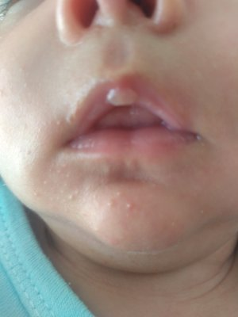
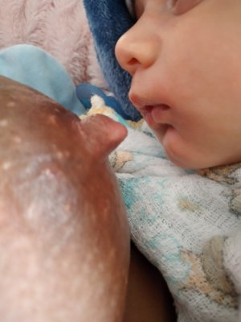

Por que meu bebê parece não saciar no seio?
Por que ele mama por horas e continua com fome, e como ajustar isso já na próxima mamada.
 Dayane Dos AnjosConsultora de amamentação
Dayane Dos AnjosConsultora de amamentação
Por que ele mama por horas e continua com fome, e como ajustar isso já na próxima mamada.
Dayane Dos AnjosConsultora de amamentação
Se o bebê parece não saciar no seio, mesmo depois de mamar continua parecendo estar com fome, ele está precisando de ajuda!
Muitas pessoas pensam que a pega correta se resume ao bebê acoplar no seio e sugar, mas acoplar e sugar é o que o recém-nascido faz com tudo que passa perto da boca. É como se ele viesse programado para isso, porque sabe que é através da sucção que consegue alimento.
Porém, para extrair leite de forma satisfatória, o bebê precisa da pega correta, que é muito mais do que apenas sugar de qualquer maneira.
O bebê consegue alimento através da sucção, e acredita que, se continuar sugando, o leite virá em algum momento. Por isso continua e continua, mesmo que a extração esteja baixa.
O fato de não conseguir extrair leite de forma satisfatória não significa que a mãe não produz leite suficiente. A dificuldade está na forma como o bebê abocanha e faz a extração, não na produção. É muito comum mães viverem essas dificuldades na amamentação com o seio pingando leite ou até empedrado.
O bebê faz dois tipos de sucção: a nutritiva, onde ele de fato extrai leite, e a não nutritiva, onde suga mas não retira leite do seio. Saber diferenciar as duas é essencial para saber se o seu bebê está mamando bem.
Na sucção nutritiva, esperada desde o início da mamada, o bebê mama em ritmo mais lento e dá pra ver os movimentos de deglutição. O esperado é que ele sugue no máximo 3 vezes e engula. Aqui ele está efetivamente se alimentando.
Na sucção não nutritiva, o ritmo é mais rápido, sem deglutição frequente. É esperada no final da mamada, logo antes do bebê adormecer, quando ele já está saciado.
Se o bebê faz a sucção não nutritiva desde o início, ou em boa parte da mamada, ele não está fazendo isso porque quer. O bebê está tentando extrair alimento e não está conseguindo. Esse é um grande sinal de alerta.
Veja no vídeo a diferença entre as sucções:
Mamadas longas, intermináveis, de intervalos curtos, dor para amamentar, fissuras ou calo no lábio do bebê também são sinais importantes a se observar. Mesmo que o bebê esteja ganhando peso bem, esses sinais mostram que ele está se esforçando muito além do necessário para se alimentar.
Vou te explicar cada um desses sinais. ↓
Se as mamadas se estendem por muito tempo ou ocorrem em intervalos muito curtos, é sinal claro de que o bebê não está conseguindo extrair leite de forma satisfatória. Mamadas que ultrapassam 30 a 40 minutos, chegando a 1 hora ou mais, são um grande sinal de alerta. O natural é o bebê mamar e soltar o seio sozinho, assim como fazemos com a comida quando estamos satisfeitos. Não é normal o bebê querer ficar colado no seio o dia todo.
Se o bebê adormece logo que começa a mamar, antes de estar satisfeito, e basta você mexer que ele já acorda querendo voltar ao seio… é sinal de que ele gasta uma energia tão grande pra mamar que se cansa antes da hora. Bebês não são preguiçosos, ninguém tem preguiça de se alimentar. Ele quer mamar, mas precisa de ajuda para conseguir ordenhas efetivas.
Essa frase é cruel e não diz a verdade. O bebê está ali tentando se alimentar, com dificuldade. Sugar é a forma que ele tem de buscar alimento. Se quer ficar muito tempo no seio, é porque está levando todo esse tempo para extrair o leite de que precisa, não por outro motivo.

O calo se forma como resposta ao atrito constante dos lábios durante a amamentação. Isso não é o esperado: o bebê está fazendo força com os lábios para compensar algo que não vai bem na extração do leite. Quem deve trabalhar para extrair o leite é a língua do bebê, não os lábios. Com a pega correta, a língua faz a ordenha e os lábios ficam relaxados, apenas vedando a boca. Todo calo é sinal de esforço repetitivo e desconforto, e na boquinha do bebê não é diferente.
A dor indica que a pega do bebê está superficial, o que causa lesões nos mamilos e dificulta a extração do leite. Mesmo aquela dor que dura poucos segundos: a mãe deixa de sentir rápido não porque parou de machucar, mas porque o corpo libera hormônios pra ela parar de sentir, só que continua machucando durante toda a mamada.

São machucados muito doloridos, mas superficiais, e cicatrizam rápido, de um dia para o outro, assim que a pega é ajustada. Com a pega correta a mãe não sente dor mesmo com os seios machucados, porque o bico se posiciona no fundo da boca do bebê, sem pressão entre a língua e o céu da boca.

O bico fica achatado por conta da posição em que o bebê abocanha, concentrando a sucção numa parte só, em vez de abocanhar a aréola para uma ordenha satisfatória.
Dor para amamentar é um sinal ruim tanto para a mãe quanto para o bebê. A única forma de corrigir é ajustando a pega, para que ele mame de forma efetiva, saindo saciado do seio, sem te machucar.
Dá pra facilitar a pega pra mãe e pro bebê
Para amamentar de forma tranquila e sem desconforto.
Quero!! →Em poucos minutos você aprende a deixar a amamentação confortável para vocês dois. A partir daí:
Consultora de amamentação, sono e cuidados com o bebê.
As primeiras semanas decidem o sucesso da amamentação, mas é justamente quando a mãe fica mais sozinha, sem uma orientação clara. Quando a dor, a insegurança e o cansaço tomam conta, o desmame precoce acaba ganhando espaço em muitas famílias.
Foi por isso que criei um jeito de facilitar a pega para o bebê: pra dor aliviar na hora e pro bebê passar a mamar de verdade, tirando mais leite, em menos tempo, ficando satisfeito por intervalos mais longos.
Sim, e muitas vezes funciona até melhor. Um profissional presencial te ensina uma vez; mas quem vai colocar em prática nas próximas mamadas é você. O curso te mostra exatamente como fazer isso, você pode rever quantas vezes quiser, paga muito menos e não precisa esperar marcação: resolve agora, na próxima mamada.
A pega correta não se resume à boca de peixinho. Há muito mais para se atentar por fora e por dentro da boca do bebê, e é exatamente isso que você aprende no Guia da Pega.
Sim! Você assiste ao conteúdo e já coloca em prática. Como o curso ensina a facilitar a pega para o bebê, você vai ver ele pegar com mais facilidade e mamar melhor. Aplicando o passo a passo com atenção, os resultados vêm rápido, e a cada mamada fica melhor.
Cartão, Pix ou boleto. No cartão você pode parcelar em até 12x.
Acesso por 12 meses, 100% online. Você pode assistir quantas vezes quiser nesse período.
É o período para você pedir o reembolso integral caso o produto não seja satisfatório. Solicitando pela plataforma Greenn em até 7 dias da compra, o reembolso é processado automaticamente em até 5 dias.
O curso fica em uma plataforma do Manual do Recém-Nascido. Você recebe o acesso por e-mail e WhatsApp 🙂
Não. Ele é a versão Pocket do curso Técnica Dos Anjos: aqui você aprende especificamente essa técnica para já aplicar agora. Se quiser, depois você pode adquirir o acompanhamento à parte.
O Guia da Pega foi feito pra resolver exatamente o que você acabou de reconhecer no seu bebê: te mostrar, com vídeos práticos e bebês reais, como ajustar a pega em poucos minutos.
Se quiser, some o acompanhamento pelo WhatsApp por +R$87.